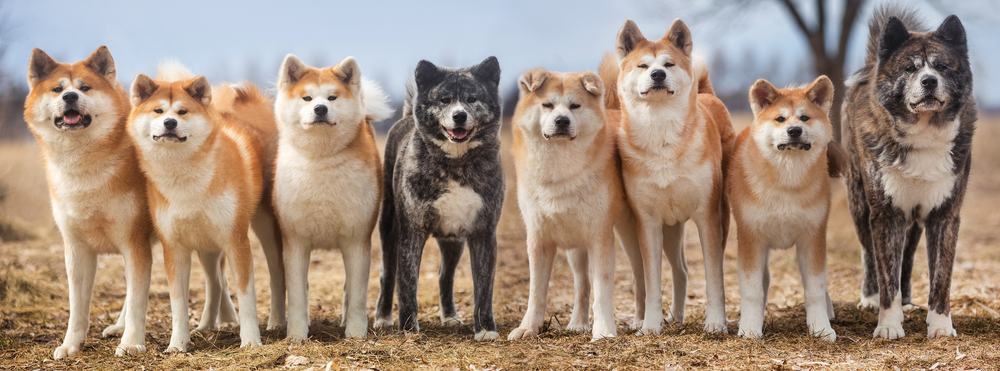

Maitres d'Akita depuis plus de 30 ans maintenant, adoptés en refuge ou par des professionnels du metier, nous voulons ici vous partager notre expériences et nos connaissances à propos de cette race japonaise.
L’Akita inu prend une place de plus en plus importante en France et cela méritait bien de lui consacrer un site regroupant toutes les informations utiles sur ces boules de poils. L’objectif étant d’essayer d’apporter une aide aux maitres actuels et à ceux désirant le devenir.
L'arche des Akita est donc une grande communauté de maitres actuels ou en devenir. Mais l'arche, c'est aussi un refuge pour les Akita qui n'ont pas eu la chance de trouver une famille digne d'eux..
En 2023, la Société Protectrice des Animaux (SPA) a pris en charge 44 844 animaux abandonnés ou maltraités. Sans compter les abandons non declarés et les prises en charges par d'autres associations ou particuliers.
L'arche des Akitas est une association indépendante qui a pour but de venir en aide à ces chiens qui se trouveraient dans des situations de détresse ou de difficulté, sur le coup d'un abandon ou toute autre situation à risque.
Elle a pour but de sensibiliser le public à cette race particulière afin de limiter les abandons et de conseiller au mieux les futurs acquéreurs pour une adoption refléchie.
Akita Inu bringé, née le 28 avril 2023 (presque 3ans).
Calme en interieur mais joueuse avec les copains/copines.
Akita Inu bringé, née le 28 mars 2023 (3ans).
S'entends avec les autres chiens, chevaux mais cours après les chats.
Akita Inu bringé, née le 28 mars 2022 (4ans).
Aime voyager, dormir et manger. Très douce avec les enfants.
Que ce soit pour adopter ou pour échanger avec nous sur une problématique, n'hésitez pas à venir nous poser toutes vos questions !